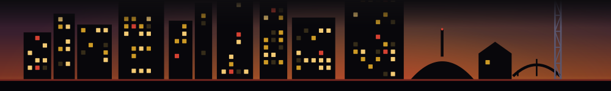

Boo at the Zoo
Nashville Zoo, Grassmere
After-hours Halloween programming at the zoo, running nightly in the final stretch before October ends. Evening slot means no competing with school and naps.

Most of what we track is here then gone. But some windows have a rhythm -- the Wednesday residency, the first-Friday crawl, the pop-up that returns every patio season. This is the standing index of those, grouped by when they come around. It rebuilds itself from what the machine actually sees, so a window that stops showing up drops off, and a new rhythm appears the week it settles in.
Standing weekly windows -- the residencies, weeknight pop-ups and recurring nights you can plan your week around.
After-hours Halloween programming at the zoo, running nightly in the final stretch before October ends. Evening slot means no competing with school and naps.
Monthly markets, first-Friday crawls, full-moon parties -- the ones that come around once a month.
A cocktail lounge pegged for November in Germantown. One of the few openings with a month attached, so it could land any week now.
A month-long wine tasting at City Winery, from $39. Plenty of runway, but it is a fixed window with an end date.
A new restaurant opening on West End the first Friday of November. Worth noting for anyone who wants to be there before the novelty wears off.
Patio-season pop-ups, summer series and holiday bars we have watched return -- only ones we have actually seen recur are listed here.
Cheekwood's autumn programming runs all day, every day this week. It is a straightforward way to get a seasonal outing in before the calendar flips to November.
One of the year's big holiday concerts, with Alex Warren, Hilary Duff, Teddy Swims, OneRepublic, Nickelback and more on the bill.
Gaylord Opryland's signature holiday attraction comes back with a Home Alone theme. It is the resort's annual kickoff to the season.
A Halloween-season pop-up bar set inside a meadery, with drink specials running through the end of October. Mead and a mummy theme is a fair pairing for the final week.
Holiday standards performed live on strings by candlelight. Two nights only, and a gentler alternative to Broadway's holiday noise, from $35.
Seasonal carols played live by a string ensemble in a candlelit setting. Only two nights, the weekend before Christmas, from $35.
Geist turns holiday for the season. A seasonal reason to revisit a Germantown regular, with the run starting early in November.
A Christmas-season pop-up bar arriving in Germantown just before Thanksgiving. Worth penciling in for the festive part of the calendar.
A Santa-themed holiday pop-up settles into a Downtown bar. Seasonal cocktail territory, and a bar that is easy to walk past if you are not looking.
This board does not ping you. It is a pull surface on purpose -- no alerts, no notifications. It just sits here, current, for when you want to know what keeps coming back. The way to catch the one-time windows too -- the here-then-gone things that never repeat -- is the Thursday list: the week's time-limited Nashville windows, in your inbox before they close.
Get the Thursday list, free →Every window here is confirmed current: it is in the live discovery feed right now, and either states its own recurring cadence or has been seen to recur across multiple weeks. Windows we have only seen once, or that name no cadence, are held back rather than guessed. Looking for what is open or closing this week? See the conditions board. The full record is in the archive.